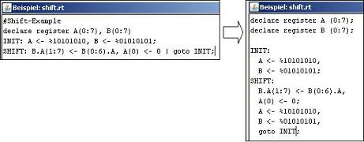

Das Hauptfenster ist der "Desktop" für die anderen RTeasyfenster. Alle Fenster können innerhalb dieser Arbeitsfläche beliebig platziert werden. In der Menüleiste befinden sich die Menüpunkte
Darunter befindet sich die Leiste für die Simulationskontrolle (Abschnitt
3.1.2.1: Simulatorsteuerung). Im Editiermodus sind alle Schaltflächen
inaktiv bis auf die Schaltfläche  .
.
RTeasy kann sich in zwei unterschiedlichen Zuständen befinden. Im Editiermodus (Abschnitt 3.1.1: Editiermodus) können Sie ein RTeasy-Programm bearbeiten und verändern. Außerdem können Sie sich in diesem Modus die Übersetzung in VHDL anzeigen lassen. Im Simulationsmodus (Abschnitt 3.1.2: Simulationsmodus) können Sie das Programm ausführen und sich die Register-, Bus- und Speicherinhalte anzeigen lassen. In diesem Modus können sie das Programm nicht verändern.
Sie befinden sich standardmäßig in diesem Modus, wenn eine Datei geladen
wird oder ein neues Programm erzeugt wird. Befindet sich RTeasy im
Simulationsmodus, können Sie die Schaltfläche  benutzen, um in den Editiermodus zu
gelangen.
benutzen, um in den Editiermodus zu
gelangen.
Diese Menüpunkte beenden den Simulationsmodus und wechseln in den Editiermodus. |
 . Schließt das aktuelle
RTeasy-Programm und öffnet ein neues, leeres RT-Programm im Editorfenster (Abschnitt 4:
Editorfenster).
. Schließt das aktuelle
RTeasy-Programm und öffnet ein neues, leeres RT-Programm im Editorfenster (Abschnitt 4:
Editorfenster).
 . Lädt ein Rteasy-Programm aus einer Datei in den Editor (Abschnitt 4: Editorfenster).
. Lädt ein Rteasy-Programm aus einer Datei in den Editor (Abschnitt 4: Editorfenster).
 . Speichert das Programm an den Ort,
der in der Kopfzeile des Editorfensters angezeigt wird. Sollte die Datei noch
nie abbespeichert worden sein, öffnet sich ein Dialog, in dem Sie auswählen
können an welchen Ort die Datei gespeichert werden soll.
. Speichert das Programm an den Ort,
der in der Kopfzeile des Editorfensters angezeigt wird. Sollte die Datei noch
nie abbespeichert worden sein, öffnet sich ein Dialog, in dem Sie auswählen
können an welchen Ort die Datei gespeichert werden soll.
 . Speichert das Programm an den im
Dialog ausgewählten Ort.
. Speichert das Programm an den im
Dialog ausgewählten Ort.
 . Beendet RTeasy.
. Beendet RTeasy.

Diese Menüpunkte sind nur im Editiermodus aktiv. |
 . Macht die letzte Änderung
rückgängig.
. Macht die letzte Änderung
rückgängig.
 . Kopiert den im Editor markierten
Text in die Zwischenablage.
. Kopiert den im Editor markierten
Text in die Zwischenablage.
 . Entfernt den im Editor markierten
Text und kopiert ihn in die Zwischenablage.
. Entfernt den im Editor markierten
Text und kopiert ihn in die Zwischenablage.
 . Fügt den Inhalt der
Zwischenablage an die aktuelle Cursorposition im Editorfenster ein.
. Fügt den Inhalt der
Zwischenablage an die aktuelle Cursorposition im Editorfenster ein.
 . Dieser
Menüpunkt versucht das Programm zu kompilieren. Ist dies erfolgreich, dann
wird das Programm in eine einheitliche und übersichliche Struktur gebracht.
Warnungen werden soweit wie möglich behoben. Die auftretenden Fehler und
Warnungen erscheinen im Logfenster (Abschnitt 9: Das Logfenster).
. Dieser
Menüpunkt versucht das Programm zu kompilieren. Ist dies erfolgreich, dann
wird das Programm in eine einheitliche und übersichliche Struktur gebracht.
Warnungen werden soweit wie möglich behoben. Die auftretenden Fehler und
Warnungen erscheinen im Logfenster (Abschnitt 9: Das Logfenster).
 .
Hier können sie das Verhalten und Aussehen von RTeasy anpassen.
.
Hier können sie das Verhalten und Aussehen von RTeasy anpassen.
Dieser Menüpunkt ist immer aktiv. |
Wenn sie sich im Simulationsmodus befinden, dann können sie das
eingegebene RT-Programm ausführen und bearbeiten. Wenn sie sich im Editiermodus
befinden, dann können sie mittels  in den
Simulationsmodus wechseln. ( Abschnitt 3.1: Editor-/Simulatormodus
)
in den
Simulationsmodus wechseln. ( Abschnitt 3.1: Editor-/Simulatormodus
)
Nur im Simulationsmodus sind die Schaltflächen für die Simulationssteuerung aktiv. |
 . Wechselt in den Editiermodus (Abschnitt 3.1.1:
Editiermodus)
. Wechselt in den Editiermodus (Abschnitt 3.1.1:
Editiermodus)
 . Setzt Programmzähler und Inhalte von
Registern und Bussen wieder auf die Initialwerte
. Setzt Programmzähler und Inhalte von
Registern und Bussen wieder auf die Initialwerte
 . Führt den nächsten parallel
Anweisungsblock aus
. Führt den nächsten parallel
Anweisungsblock aus
 . Führt die nächste Anweisung
innerhalb einer parallen Anweisungssequenz oder die erste der nächsten
parallelen Anweisungssequenz aus
. Führt die nächste Anweisung
innerhalb einer parallen Anweisungssequenz oder die erste der nächsten
parallelen Anweisungssequenz aus
 . Führt das Programm aus bis es terminiert
oder unterbrochen wird
. Führt das Programm aus bis es terminiert
oder unterbrochen wird
 . Öffnet das Breakpoint-Fenster Abschnitt 8:
Breakpoint-Fenster in dem Haltepunkte hinzugefügt oder gelöscht werden
können
. Öffnet das Breakpoint-Fenster Abschnitt 8:
Breakpoint-Fenster in dem Haltepunkte hinzugefügt oder gelöscht werden
können
 . Setzt Programmzähler und Inhalte
von Registern und Bussen wieder auf die Initialwerte.
. Setzt Programmzähler und Inhalte
von Registern und Bussen wieder auf die Initialwerte.
 . Führt den nächsten parallel
Anweisungsblock aus.
. Führt den nächsten parallel
Anweisungsblock aus.
 . Führt die nächste Anweisung
innerhalb einer parallen Anweisungssequenz oder die erste der nächsten
parallelen Anweisungssequenz aus.
. Führt die nächste Anweisung
innerhalb einer parallen Anweisungssequenz oder die erste der nächsten
parallelen Anweisungssequenz aus.
 . Führt das Programm aus
bis es terminiert oder unterbrochen wird.
. Führt das Programm aus
bis es terminiert oder unterbrochen wird.
 . Öffnet das
Breakpoint-Fenster Abschnitt 8: Breakpoint-Fenster in dem
Haltepunkte hinzugefügt oder gelöscht werden können.
. Öffnet das
Breakpoint-Fenster Abschnitt 8: Breakpoint-Fenster in dem
Haltepunkte hinzugefügt oder gelöscht werden können.
 .
Löscht den Inhalt aller deklarierten Speicher.
.
Löscht den Inhalt aller deklarierten Speicher.
 . Löscht den
Inhalt des Logfensters. (Abschnitt 9: Das Logfenster)
. Löscht den
Inhalt des Logfensters. (Abschnitt 9: Das Logfenster)
Die Funktion 'Signale zeigen' errechnet aus einem eingegebenen Programm
die nötigen Kontrollsignale eines vom Programm beschriebenen Operationswerk.
Die Kontrollsignale werden in einem neuen Fenster aufgelistet. Über die
Schaltfläche  kann dieses Fenster wieder geschlossen
werden.
kann dieses Fenster wieder geschlossen
werden.
Diese Funktion berechnet ein Low-Level-Modell aus dem gegebenem Programm. Dazu werden vor allem parallele Anweisungen, die mit dem Pipe-Operator gekennzeichnet wurden, in sequenzielle Anweisungen überführt.
Mit diesem Menüpunkt wird ein VHDL-Modell des eingegebenen RTeasy-Programms generiert. Das RTeasy-Programm muss dabei lauffähig sein. Eine Fehlermeldung weist aus eventuell vorhandene Programmfehler hin, die behoben werden müssen, bevor ein VHDL-Modell generiert werden kann. Es sei darauf hingewiesen, dass der generierte VHDL-Code maschinell erzeugt wird. Das kann zu redundanten Programmteilen und kleineren Fehlern führen. Es ist daher empfehlenswert, den VHDL-Code auf Fehler zu prüfen.